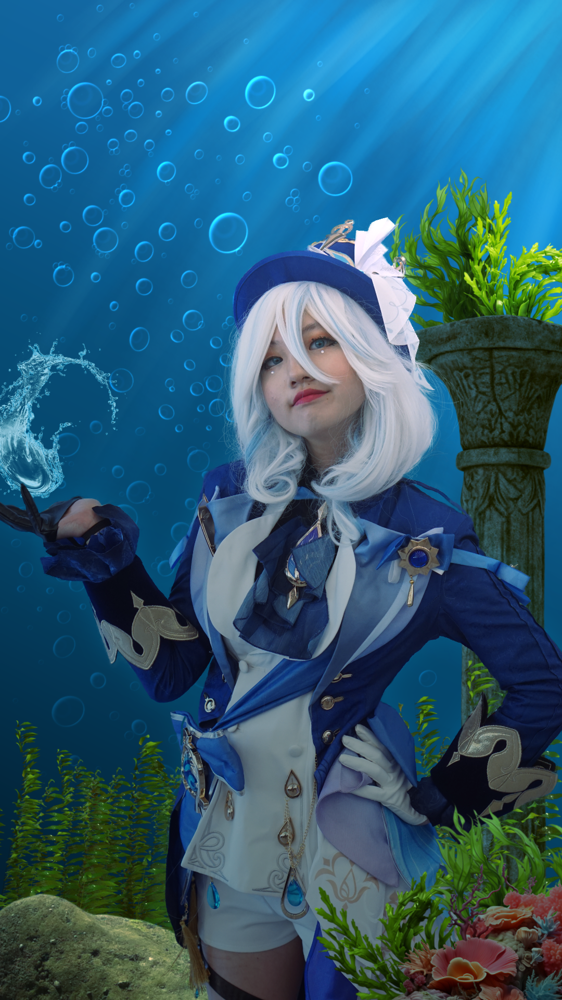

Hello humans and humanettes,
My name is Daniel. I am a 19 year old college student enrolled in the mulimedia and integration program. I learned about
the existence of this program from a high school friend of mine. It is currently my fifth semester in CEGEP, but my
first semester in this program at the time of typing this (10/14/2024). Before transferring to multimedia, I was in
social sciences. I absolutely despised the program, since it was simply not for me and it felt as if that period of time was a period to find out what I wanted to do in the long term. I am excited to learn in my new
program and thrilled about the project ahead of me. I am also excited to learn new skills, like video editing and javascipt.
I enjoy playing video games in my spare time. Some video games that I play are Stardew Valley, Minecraft and
Valorant. I
am also a board game enjoyer, a massive foodie and a basketball fanatic. I also enjoy biking around town when I get
the chance to. In terms of music taste, I prefer older songs rather than today's music, let's say around the 1970's all the way to the 2010's. I also enjoy mangas and anime.
Some of my favorite anime that I have watched are Hunter x Hunter, Clannad and One Piece (Yes, I'm caught up to the manga)

Some of my strong suits are my creativity, my team communication, my leadership and surprisingly, my problem solving skills. I was always better at the technical aspects at school rather than the theoretical parts.
I also have experience with photo editing softwares, having used many different applications in the span of 3 years. The picture to the left is an example of one of my edits.
When it comes to my weaknesses, my time management is one of them. I SUCK at being on time. Another one of my weaknesses is memorization. I could not
memorize something to save my own life. I was never a good memorizer. You could probably tell me your name and I'll forget in the next minute.